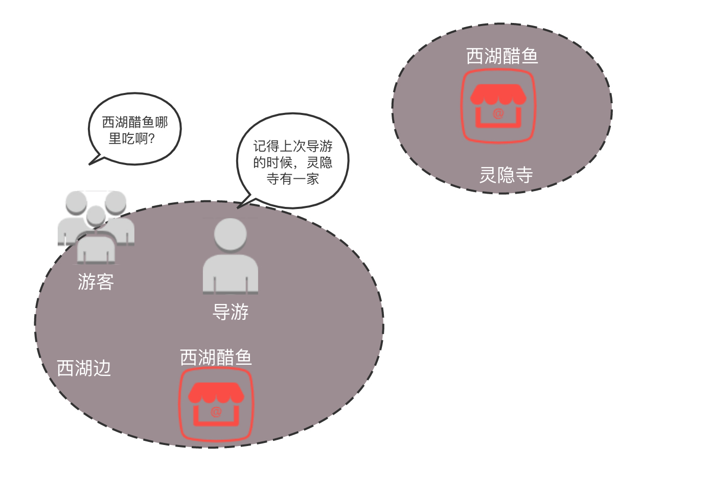
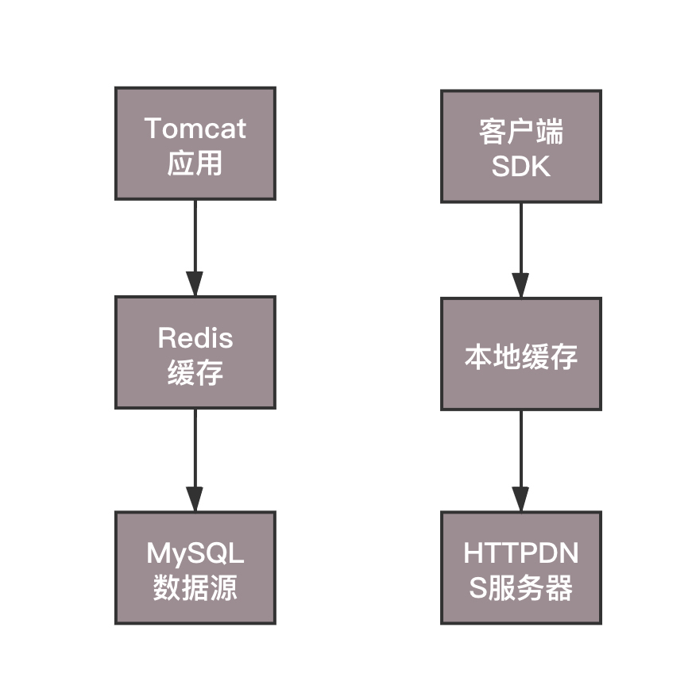

- 00 开篇词 想成为技术牛人？先搞定网络协议！.md.html
- 01 为什么要学习网络协议？.md.html
- 02 网络分层的真实含义是什么？.md.html
- 03 ifconfig：最熟悉又陌生的命令行.md.html
- 04 DHCP与PXE：IP是怎么来的，又是怎么没的？.md.html
- 05 从物理层到MAC层：如何在宿舍里自己组网玩联机游戏？.md.html
- 06 交换机与VLAN：办公室太复杂，我要回学校.md.html
- 07 ICMP与ping：投石问路的侦察兵.md.html
- 08 世界这么大，我想出网关：欧洲十国游与玄奘西行.md.html
- 09 路由协议：西出网关无故人，敢问路在何方.md.html
- 10 UDP协议：因性善而简单，难免碰到“城会玩”.md.html
- 11 TCP协议（上）：因性恶而复杂，先恶后善反轻松.md.html
- 12 TCP协议（下）：西行必定多妖孽，恒心智慧消磨难.md.html
- 13 套接字Socket：Talk is cheap, show me the code.md.html
- 14 HTTP协议：看个新闻原来这么麻烦.md.html
- 15 HTTPS协议：点外卖的过程原来这么复杂.md.html
- 16 流媒体协议：如何在直播里看到美女帅哥？.md.html
- 17 P2P协议：我下小电影，99%急死你.md.html
- 18 DNS协议：网络世界的地址簿.md.html
- 19 HttpDNS：网络世界的地址簿也会指错路.md.html
- 20 CDN：你去小卖部取过快递么？.md.html
- 21 数据中心：我是开发商，自己拿地盖别墅.md.html
- 22 VPN：朝中有人好做官.md.html
- 23 移动网络：去巴塞罗那，手机也上不了脸书.md.html
- 24 云中网络：自己拿地成本高，购买公寓更灵活.md.html
- 25 软件定义网络：共享基础设施的小区物业管理办法.md.html
- 26 云中的网络安全：虽然不是土豪，也需要基本安全和保障.md.html
- 27 云中的网络QoS：邻居疯狂下电影，我该怎么办？.md.html
- 28 云中网络的隔离GRE、VXLAN：虽然住一个小区，也要保护隐私.md.html
- 29 容器网络：来去自由的日子，不买公寓去合租.md.html
- 30 容器网络之Flannel：每人一亩三分地.md.html
- 31 容器网络之Calico：为高效说出善意的谎言.md.html
- 32 RPC协议综述：远在天边，近在眼前.md.html
- 33 基于XML的SOAP协议：不要说NBA，请说美国职业篮球联赛.md.html
- 34 基于JSON的RESTful接口协议：我不关心过程，请给我结果.md.html
- 35 二进制类RPC协议：还是叫NBA吧，总说全称多费劲.md.html
- 36 跨语言类RPC协议：交流之前，双方先来个专业术语表.md.html
- 37 知识串：用双十一的故事串起碎片的网络协议（上）.md.html
- 38 知识串：用双十一的故事串起碎片的网络协议（中）.md.html
- 39 知识串：用双十一的故事串起碎片的网络协议（下）.md.html
- 40 搭建一个网络实验环境：授人以鱼不如授人以渔.md.html
- 加餐1 创作故事：我是如何创作“趣谈网络协议”专栏的？.md.html
- 协议专栏特别福利 答疑解惑1期.md.html
- 协议专栏特别福利 答疑解惑2期.md.html
- 协议专栏特别福利 答疑解惑3期.md.html
- 协议专栏特别福利 答疑解惑4期.md.html
- 协议专栏特别福利 答疑解惑5期.md.html
- 结束语 放弃完美主义，执行力就是限时限量认真完成.md.html
- 捐赠
19 HttpDNS：网络世界的地址簿也会指错路
上一节我们知道了DNS的两项功能，第一是根据名称查到具体的地址，另外一个是可以针对多个地址做负载均衡，而且可以在多个地址中选择一个距离你近的地方访问。
然而有时候这个地址簿也经常给你指错路，明明距离你500米就有个吃饭的地方，非要把你推荐到5公里外。为什么会出现这样的情况呢？
还记得吗？当我们发出请求解析DNS的时候，首先，会先连接到运营商本地的DNS服务器，由这个服务器帮我们去整棵DNS树上进行解析，然后将解析的结果返回给客户端。但是本地的DNS服务器，作为一个本地导游，往往有自己的“小心思”。
传统DNS存在哪些问题？
1.域名缓存问题
它可以在本地做一个缓存，也就是说，不是每一个请求，它都会去访问权威DNS服务器，而是访问过一次就把结果缓存到自己本地，当其他人来问的时候，直接就返回这个缓存数据。
这就相当于导游去过一个饭店，自己脑子记住了地址，当有一个游客问的时候，他就凭记忆回答了，不用再去查地址簿。这样经常存在的一个问题是，人家那个饭店明明都已经搬了，结果作为导游，他并没有刷新这个缓存，结果你辛辛苦苦到了这个地点，发现饭店已经变成了服装店，你是不是会非常失望？
另外，有的运营商会把一些静态页面，缓存到本运营商的服务器内，这样用户请求的时候，就不用跨运营商进行访问，这样既加快了速度，也减少了运营商之间流量计算的成本。在域名解析的时候，不会将用户导向真正的网站，而是指向这个缓存的服务器。
很多情况下是看不出问题的，但是当页面更新，用户会访问到老的页面，问题就出来了。例如，你听说一个餐馆推出了一个新菜，你想去尝一下。结果导游告诉你，在这里吃也是一样的。有的游客会觉得没问题，但是对于想尝试新菜的人来说，如果导游说带你去，但其实并没有吃到新菜，你是不是也会非常失望呢？
再就是本地的缓存，往往使得全局负载均衡失败，因为上次进行缓存的时候，缓存中的地址不一定是这次访问离客户最近的地方，如果把这个地址返回给客户，那肯定就会绕远路。
就像上一次客户要吃西湖醋鱼的事，导游知道西湖边有一家，因为当时游客就在西湖边，可是，下一次客户在灵隐寺，想吃西湖醋鱼的时候，导游还指向西湖边的那一家，那这就绕得太远了。

2.域名转发问题
缓存问题还是说本地域名解析服务，还是会去权威DNS服务器中查找，只不过不是每次都要查找。可以说这还是大导游、大中介。还有一些小导游、小中介，有了请求之后，直接转发给其他运营商去做解析，自己只是外包了出去。
这样的问题是，如果是A运营商的客户，访问自己运营商的DNS服务器，如果A运营商去权威DNS服务器查询的话，权威DNS服务器知道你是A运营商的，就返回给一个部署在A运营商的网站地址，这样针对相同运营商的访问，速度就会快很多。
但是A运营商偷懒，将解析的请求转发给B运营商，B运营商去权威DNS服务器查询的话，权威服务器会误认为，你是B运营商的，那就返回给你一个在B运营商的网站地址吧，结果客户的每次访问都要跨运营商，速度就会很慢。

3.出口NAT问题
前面讲述网关的时候，我们知道，出口的时候，很多机房都会配置NAT，也即网络地址转换，使得从这个网关出去的包，都换成新的IP地址，当然请求返回的时候，在这个网关，再将IP地址转换回去，所以对于访问来说是没有任何问题。
但是一旦做了网络地址的转换，权威的DNS服务器，就没办法通过这个地址，来判断客户到底是来自哪个运营商，而且极有可能因为转换过后的地址，误判运营商，导致跨运营商的访问。
4.域名更新问题
本地DNS服务器是由不同地区、不同运营商独立部署的。对域名解析缓存的处理上，实现策略也有区别，有的会偷懒，忽略域名解析结果的TTL时间限制，在权威DNS服务器解析变更的时候，解析结果在全网生效的周期非常漫长。但是有的时候，在DNS的切换中，场景对生效时间要求比较高。
例如双机房部署的时候，跨机房的负载均衡和容灾多使用DNS来做。当一个机房出问题之后，需要修改权威DNS，将域名指向新的IP地址，但是如果更新太慢，那很多用户都会出现访问异常。
这就像，有的导游比较勤快、敬业，时时刻刻关注酒店、餐馆、交通的变化，问他的时候，往往会得到最新情况。有的导游懒一些，8年前背的导游词就没换过，问他的时候，指的路往往就是错的。
5.解析延迟问题
从上一节的DNS查询过程来看，DNS的查询过程需要递归遍历多个DNS服务器，才能获得最终的解析结果，这会带来一定的时延，甚至会解析超时。
HttpDNS的工作模式
既然DNS解析中有这么多问题，那怎么办呢？难不成退回到直接用IP地址？这样显然不合适，所以就有了 HttpDNS。
HttpDNS其实就是，不走传统的DNS解析，而是自己搭建基于HTTP协议的DNS服务器集群，分布在多个地点和多个运营商。当客户端需要DNS解析的时候，直接通过HTTP协议进行请求这个服务器集群，得到就近的地址。
这就相当于每家基于HTTP协议，自己实现自己的域名解析，自己做一个自己的地址簿，而不使用统一的地址簿。但是默认的域名解析都是走DNS的，因而使用HttpDNS需要绕过默认的DNS路径，就不能使用默认的客户端。使用HttpDNS的，往往是手机应用，需要在手机端嵌入支持HttpDNS的客户端SDK。
通过自己的HttpDNS服务器和自己的SDK，实现了从依赖本地导游，到自己上网查询做旅游攻略，进行自由行，爱怎么玩怎么玩。这样就能够避免依赖导游，而导游又不专业，你还不能把他怎么样的尴尬。
下面我来解析一下 HttpDNS的工作模式。
在客户端的SDK里动态请求服务端，获取HttpDNS服务器的IP列表，缓存到本地。随着不断地解析域名，SDK也会在本地缓存DNS域名解析的结果。
当手机应用要访问一个地址的时候，首先看是否有本地的缓存，如果有就直接返回。这个缓存和本地DNS的缓存不一样的是，这个是手机应用自己做的，而非整个运营商统一做的。如何更新、何时更新，手机应用的客户端可以和服务器协调来做这件事情。
如果本地没有，就需要请求HttpDNS的服务器，在本地HttpDNS服务器的IP列表中，选择一个发出HTTP的请求，会返回一个要访问的网站的IP列表。
请求的方式是这样的。
curl http://106.2.xxx.xxx/d?dn=c.m.163.com
{"dns":[{"host":"c.m.163.com","ips":["223.252.199.12"],"ttl":300,"http2":0}],"client":{"ip":"106.2.81.50","line":269692944}}
手机客户端自然知道手机在哪个运营商、哪个地址。由于是直接的HTTP通信，HttpDNS服务器能够准确知道这些信息，因而可以做精准的全局负载均衡。

当然，当所有这些都不工作的时候，可以切换到传统的LocalDNS来解析，慢也比访问不到好。那HttpDNS是如何解决上面的问题的呢？
其实归结起来就是两大问题。一是解析速度和更新速度的平衡问题，二是智能调度的问题，对应的解决方案是HttpDNS的缓存设计和调度设计。
HttpDNS的缓存设计
解析DNS过程复杂，通信次数多，对解析速度造成很大影响。为了加快解析，因而有了缓存，但是这又会产生缓存更新速度不及时的问题。最要命的是，这两个方面都掌握在别人手中，也即本地DNS服务器手中，它不会为你定制，你作为客户端干着急没办法。
而HttpDNS就是将解析速度和更新速度全部掌控在自己手中。一方面，解析的过程，不需要本地DNS服务递归的调用一大圈，一个HTTP的请求直接搞定，要实时更新的时候，马上就能起作用；另一方面为了提高解析速度，本地也有缓存，缓存是在客户端SDK维护的，过期时间、更新时间，都可以自己控制。
HttpDNS的缓存设计策略也是咱们做应用架构中常用的缓存设计模式，也即分为客户端、缓存、数据源三层。
对于应用架构来讲，就是应用、缓存、数据库。常见的是Tomcat、Redis、MySQL。
对于HttpDNS来讲，就是手机客户端、DNS缓存、HttpDNS服务器。

只要是缓存模式，就存在缓存的过期、更新、不一致的问题，解决思路也是很像的。
例如DNS缓存在内存中，也可以持久化到存储上，从而APP重启之后，能够尽快从存储中加载上次累积的经常访问的网站的解析结果，就不需要每次都全部解析一遍，再变成缓存。这有点像Redis是基于内存的缓存，但是同样提供持久化的能力，使得重启或者主备切换的时候，数据不会完全丢失。
SDK中的缓存会严格按照缓存过期时间，如果缓存没有命中，或者已经过期，而且客户端不允许使用过期的记录，则会发起一次解析，保障记录是更新的。
解析可以同步进行，也就是直接调用HttpDNS的接口，返回最新的记录，更新缓存；也可以异步进行，添加一个解析任务到后台，由后台任务调用HttpDNS的接口。
同步更新的优点是实时性好，缺点是如果有多个请求都发现过期的时候，同时会请求HttpDNS多次，其实是一种浪费。
同步更新的方式对应到应用架构中缓存的Cache-Aside机制，也即先读缓存，不命中读数据库，同时将结果写入缓存。

异步更新的优点是，可以将多个请求都发现过期的情况，合并为一个对于HttpDNS的请求任务，只执行一次，减少HttpDNS的压力。同时可以在即将过期的时候，就创建一个任务进行预加载，防止过期之后再刷新，称为预加载。
它的缺点是当前请求拿到过期数据的时候，如果客户端允许使用过期数据，需要冒一次风险。如果过期的数据还能请求，就没问题；如果不能请求，则失败一次，等下次缓存更新后，再请求方能成功。

异步更新的机制对应到应用架构中缓存的Refresh-Ahead机制，即业务仅仅访问缓存，当过期的时候定期刷新。在著名的应用缓存Guava Cache中，有个RefreshAfterWrite机制，对于并发情况下，多个缓存访问不命中从而引发并发回源的情况，可以采取只有一个请求回源的模式。在应用架构的缓存中，也常常用数据预热或者预加载的机制。

HttpDNS的调度设计
由于客户端嵌入了SDK，因而就不会因为本地DNS的各种缓存、转发、NAT，让权威DNS服务器误会客户端所在的位置和运营商，而可以拿到第一手资料。
在客户端，可以知道手机是哪个国家、哪个运营商、哪个省，甚至哪个市，HttpDNS服务端可以根据这些信息，选择最佳的服务节点访问。
如果有多个节点，还会考虑错误率、请求时间、服务器压力、网络状况等，进行综合选择，而非仅仅考虑地理位置。当有一个节点宕机或者性能下降的时候，可以尽快进行切换。
要做到这一点，需要客户端使用HttpDNS返回的IP访问业务应用。客户端的SDK会收集网络请求数据，如错误率、请求时间等网络请求质量数据，并发送到统计后台，进行分析、聚合，以此查看不同的IP的服务质量。
在服务端，应用可以通过调用HttpDNS的管理接口，配置不同服务质量的优先级、权重。HttpDNS会根据这些策略综合地理位置和线路状况算出一个排序，优先访问当前那些优质的、时延低的IP地址。
HttpDNS通过智能调度之后返回的结果，也会缓存在客户端。为了不让缓存使得调度失真，客户端可以根据不同的移动网络运营商WIFI的SSID来分维度缓存。不同的运营商或者WIFI解析出来的结果会不同。
小结
好了，这节就到这里了，我们来总结一下，你需要记住这两个重点：
传统的DNS有很多问题，例如解析慢、更新不及时。因为缓存、转发、NAT问题导致客户端误会自己所在的位置和运营商，从而影响流量的调度。
HttpDNS通过客户端SDK和服务端，通过HTTP直接调用解析DNS的方式，绕过了传统DNS的这些缺点，实现了智能的调度。
最后，给你留两个思考题。
使用HttpDNS，需要向HttpDNS服务器请求解析域名，可是客户端怎么知道HttpDNS服务器的地址或者域名呢？
HttpDNS的智能调度，主要是让客户端选择最近的服务器，而有另一种机制，使得资源分发到离客户端更近的位置，从而加快客户端的访问，你知道是什么技术吗？
我们的专栏更新过半了，不知你掌握得如何？每节课后我留的思考题，你都有没有认真思考，并在留言区写下答案呢？我会从已发布的文章中选出一批认真留言的同学，赠送学习奖励礼券和我整理的独家网络协议知识图谱。
欢迎你留言和我讨论。趣谈网络协议，我们下期见！
© 2019 - 2023 Liangliang Lee. Powered by gin and hexo-theme-book.